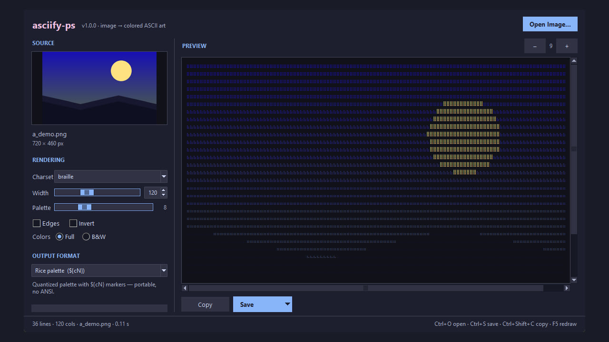

asciify-ps
A Windows desktop GUI that turns images into coloured ASCII art with a live preview.

asciify-ps is a desktop front end for the asciify-them rendering library: load an image, adjust the output and watch the coloured ASCII version update live.